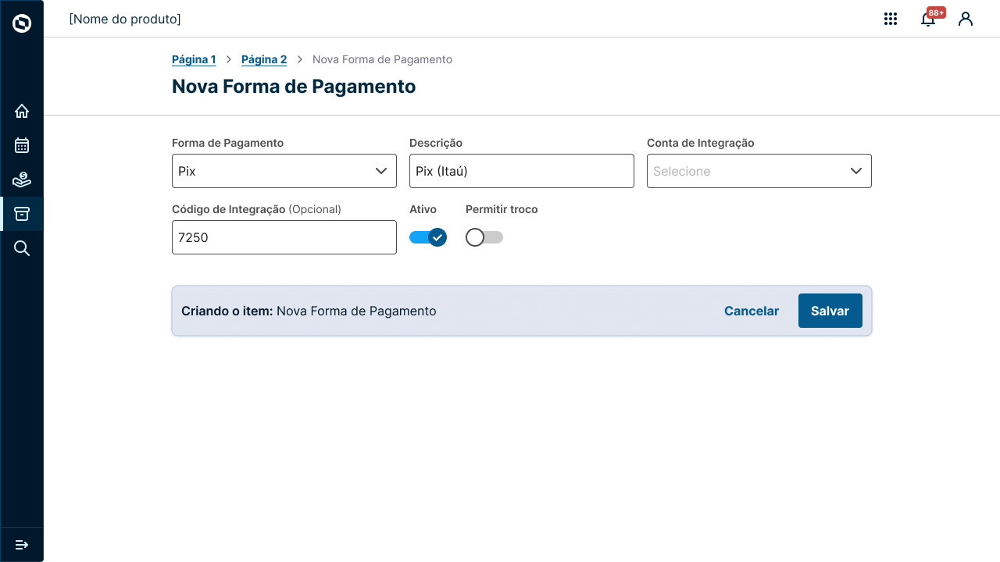
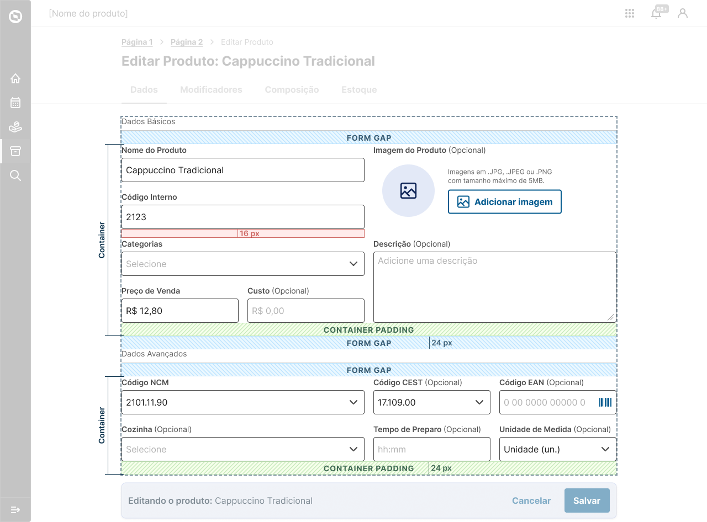
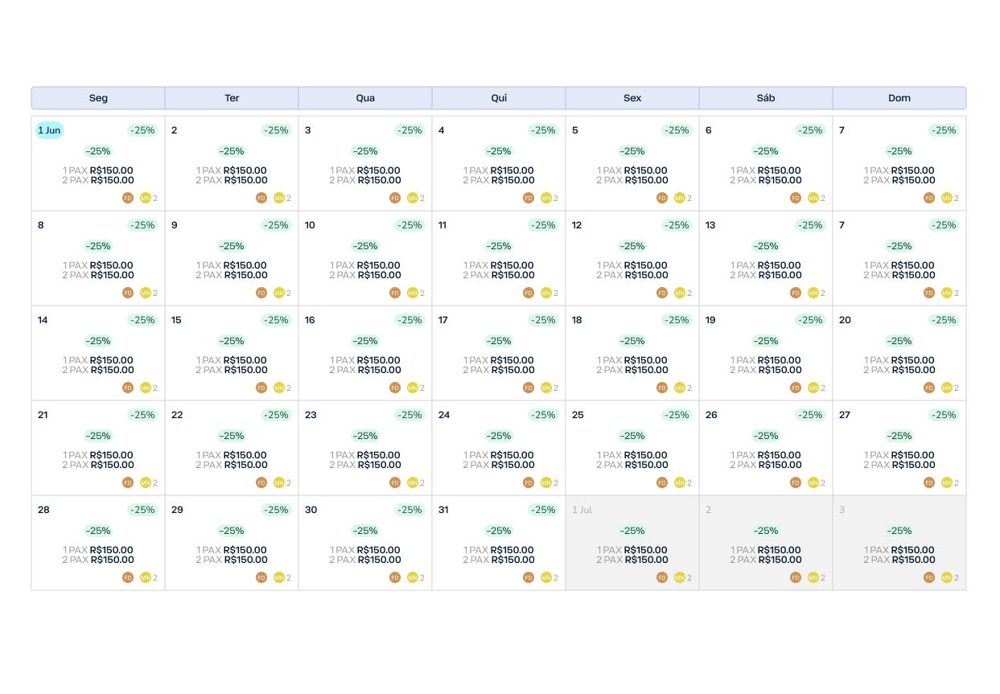
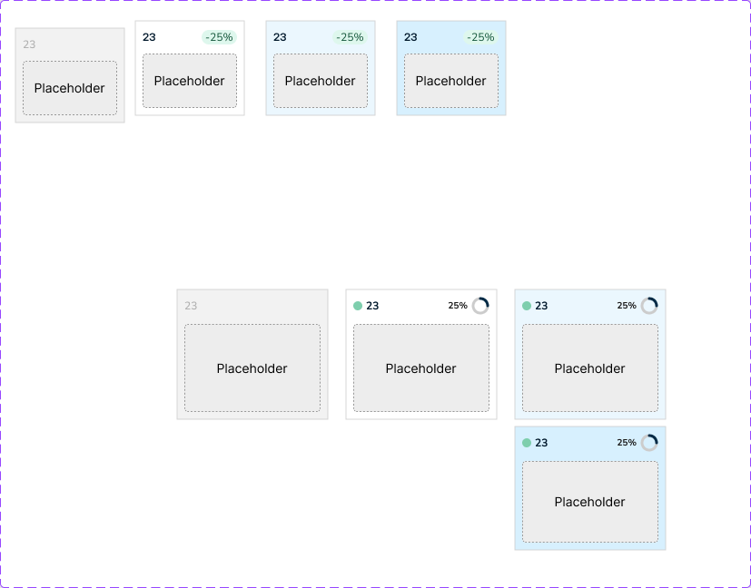

Vulpes DS: um design system para seis produtos
O design system que unifica as interfaces da TOTVS Hotelaria & Food — hoje usado pelos seis produtos. Co-liderei o projeto e desenhei o guia de tipografia, os templates de formulários e de vertical stepper e o componente de calendário.

Seis produtos — THEx PMS, THOR, DocFiscALL, THEx POS, Eleve Gestão e POS Food — eram feitos por times diferentes, cada um com suas telas e templates. O framework da companhia (Animalia DS / PO UI) não atendia às particularidades da hotelaria, e cada tela nova virava retrabalho.
O problema de verdade: designers e desenvolvedores não falavam a mesma língua.

Estender o framework, não substituí-lo
Construído sobre o Animalia DS com atomic design: átomos e moléculas da companhia; organismos, templates e páginas sob medida para a hotelaria.
Templates primeiro
Um repositório único: um template web e um mobile alimentam todos os produtos, e uma atualização chega a todos de uma vez. Começamos pelo template de cadastro, que todo produto tem.
Design que fala a língua do código
Camadas nomeadas como no código, tokens visíveis no Dev Mode e componentes documentados no Storybook.
Um processo compartilhado com os devs
Um board dual track (design → ready for dev → code → revisão de design), encontros a cada 15 dias e layouts guiados por mapas de calor e DataDog.

Quatro peças do sistema são minhas do começo ao fim — todas entregues:
01Guia de tipografia
Mapeei como a tipografia era usada nos nossos arquivos do Figma e propus uma escala única em Inter — cinco títulos e corpos do XL ao Tiny — com valores em rem e regras de quando usar cada um.
02Template de formulários
Formulários simples, extensos com divisores e dentro de master-detail, com barra de ações fixa e regras de espaçamento documentadas (form gaps e container paddings).


03Template de vertical stepper
Para fluxos de criação longos: uma versão linear, em que as etapas seguem uma ordem, e uma não linear, em que o usuário pode pular entre etapas.


04Componente de calendário (Calendar table)
Um componente para ver e gerenciar informações por data, como tarifas e descontos por dia. Parte do po-calendar do PO UI, com células de dia em quatro estados e dois tamanhos, cabeçalhos simples ou complexos e layouts Bento e página inteira.


Uma língua comum
Um design system alinha designers e devs tanto quanto entrega componentes.
Templates escalam mais
A consistência aparece quando telas inteiras são compartilhadas, não só botões.
Construir com a companhia
Estender o framework corporativo deixou o Vulpes mais fácil de adotar e de defender.